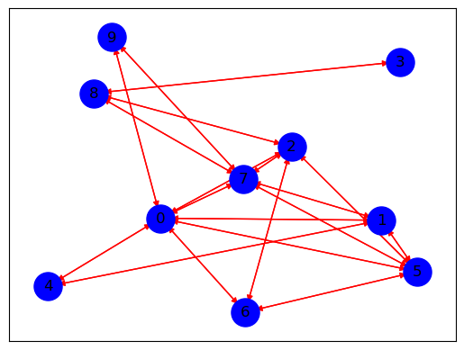
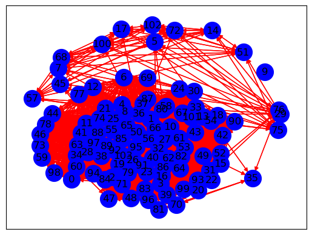

Membuat Graph & Rank Kalimat#
# import Library
import pandas as pd
from sklearn.feature_extraction.text import TfidfVectorizer
from sklearn.metrics.pairwise import cosine_similarity
from itertools import combinations
import nltk
from nltk.tokenize import word_tokenize
nltk.download('punkt')
import networkx as nx
import matplotlib.pyplot as plt
import re
import string
from Sastrawi.Stemmer.StemmerFactory import StemmerFactory
from sklearn.feature_extraction.text import TfidfVectorizer, CountVectorizer
from nltk.corpus import stopwords
from collections import Counter
[nltk_data] Downloading package punkt to
[nltk_data] C:\Users\Lenovo\AppData\Roaming\nltk_data...
[nltk_data] Package punkt is already up-to-date!
Import Csv#
df = pd.read_csv('Final_Data.csv')
df.head()
---------------------------------------------------------------------------
FileNotFoundError Traceback (most recent call last)
Cell In[2], line 1
----> 1 df = pd.read_csv('Final_Data.csv')
2 df.head()
File ~\anaconda3\Lib\site-packages\pandas\io\parsers\readers.py:948, in read_csv(filepath_or_buffer, sep, delimiter, header, names, index_col, usecols, dtype, engine, converters, true_values, false_values, skipinitialspace, skiprows, skipfooter, nrows, na_values, keep_default_na, na_filter, verbose, skip_blank_lines, parse_dates, infer_datetime_format, keep_date_col, date_parser, date_format, dayfirst, cache_dates, iterator, chunksize, compression, thousands, decimal, lineterminator, quotechar, quoting, doublequote, escapechar, comment, encoding, encoding_errors, dialect, on_bad_lines, delim_whitespace, low_memory, memory_map, float_precision, storage_options, dtype_backend)
935 kwds_defaults = _refine_defaults_read(
936 dialect,
937 delimiter,
(...)
944 dtype_backend=dtype_backend,
945 )
946 kwds.update(kwds_defaults)
--> 948 return _read(filepath_or_buffer, kwds)
File ~\anaconda3\Lib\site-packages\pandas\io\parsers\readers.py:611, in _read(filepath_or_buffer, kwds)
608 _validate_names(kwds.get("names", None))
610 # Create the parser.
--> 611 parser = TextFileReader(filepath_or_buffer, **kwds)
613 if chunksize or iterator:
614 return parser
File ~\anaconda3\Lib\site-packages\pandas\io\parsers\readers.py:1448, in TextFileReader.__init__(self, f, engine, **kwds)
1445 self.options["has_index_names"] = kwds["has_index_names"]
1447 self.handles: IOHandles | None = None
-> 1448 self._engine = self._make_engine(f, self.engine)
File ~\anaconda3\Lib\site-packages\pandas\io\parsers\readers.py:1705, in TextFileReader._make_engine(self, f, engine)
1703 if "b" not in mode:
1704 mode += "b"
-> 1705 self.handles = get_handle(
1706 f,
1707 mode,
1708 encoding=self.options.get("encoding", None),
1709 compression=self.options.get("compression", None),
1710 memory_map=self.options.get("memory_map", False),
1711 is_text=is_text,
1712 errors=self.options.get("encoding_errors", "strict"),
1713 storage_options=self.options.get("storage_options", None),
1714 )
1715 assert self.handles is not None
1716 f = self.handles.handle
File ~\anaconda3\Lib\site-packages\pandas\io\common.py:863, in get_handle(path_or_buf, mode, encoding, compression, memory_map, is_text, errors, storage_options)
858 elif isinstance(handle, str):
859 # Check whether the filename is to be opened in binary mode.
860 # Binary mode does not support 'encoding' and 'newline'.
861 if ioargs.encoding and "b" not in ioargs.mode:
862 # Encoding
--> 863 handle = open(
864 handle,
865 ioargs.mode,
866 encoding=ioargs.encoding,
867 errors=errors,
868 newline="",
869 )
870 else:
871 # Binary mode
872 handle = open(handle, ioargs.mode)
FileNotFoundError: [Errno 2] No such file or directory: 'Final_Data.csv'
Cleaning Data#
def preptext(text):
text = re.sub(r'\s+', ' ', text) #menghapus extra spasi
text = re.sub(r'[^\x00-\x7F]+', ' ', text) #menghapus non-ascii characters
text = re.sub(r"[^a-zA-Z :\.]", "", text) # Menghapus tanda baca
text = re.sub(r'\d', ' ', text) # Menghapus angka
text = text.encode('ascii','ignore').decode('utf-8') #Menghapus ASCII dan unicode
text = text.replace('\n',' ') #Menghapus baris baru
text = text.strip() #menghapus karakter kosong diawal dan akhir
text = text.lower()
# Tokenisasi
words = word_tokenize(text)
list_stopwords = set(stopwords.words("indonesian"))
words = [word for word in words if word.lower() not in list_stopwords]
return ' '.join(words)
df['isi_baru'] = df['Isi Berita'].apply(preptext)
print(df['isi_baru'].head())
0 beirut hizbullah lebanon mengumumkan pejuang p...
1 jakarta kejaksaan kejati jawa timur menangkap ...
2 jakarta menteri pertanian mentan andi amran su...
3 jakarta mantan menteri perdagangan mendag thom...
4 jakarta gerakan mahasiswa nasional indonesia g...
Name: isi_baru, dtype: object
kalimat = nltk.sent_tokenize(df['isi_baru'][15])
kalimat = [sentence.replace('.','') for sentence in kalimat]
kata = nltk.word_tokenize(df['isi_baru'][15])
kata = list(set(key for key in kata if key != '.'))
kalimat
['jakarta mantan menteri perdagangan thomas trikasih lembong tom lembong langsung ditahan kejaksaan agung kejagung ditetapkan tersangka dugaan korupsi kegiatan importasi gula kementerian perdagangan ',
'mantan cocaptain tim nasional pemenangan anies baswedanmuhaimin iskandar tim amin mengenakan rompi tahanan kejagungrompi warna merah muda bertuliskan tahanan tindak pidana korupsi kejaksaan agung ri ',
'tom kejagung menetapkan direktur pengembangan bisnis pt perusahaan perdagangan indonesia ppi cs tersangka penahananpenetapan tersangka direktur penyidik jampidsus kejagung ri abdul qohar kejagung jakarta selasa malam ',
'pantauan lokasi tersangka cs nomor kondisi tangan terborgol ',
'baca profil tom lembong mantan anak buah jokowi tim sukses anies disusul thomas lembong nomor menebar senyum awak media sepatah ',
'digelandang mobil tahanan kejagungsebelumnya tim penyidik jaksa agung muda tindak pidana khusus jampidsus kejagung menetapkan thom lembong cs tersangka ',
'langsung direktur penyidik jampidsus kejagung abdul qohar selasa malam ',
'baca breaking news tom lembong tersangka impor gula penyidik jaksa agung muda tindak pidana khusus kejaksaan agung ri menetapkan status saksi orang tersangka memenuhi alat bukti bersangkutan tindak pidana korupsi abdul qoharadapun tersangka ttl menteri perdagangan periode berdasarkan surat penetapan tersangka nomor tapf : fd : tanggal oktober ',
'tersangka nama ds direktur pengembangan bisnis pt ppi berdasarkan surat penetapan tersangka nomor tapf : fd : tanggal oktober ',
'lihat : pendidikan tom lembong lulusan harvard tersangka impor gula rca']
Membuat Graph & Rank Kalimat#
Kita akan membuat sebuah diagram (atau graph) untuk menunjukkan seberapa mirip kalimat-kalimat dalam sebuah berita. Tingkat kemiripan ini akan dihitung menggunakan cosine similarity. Agar diagramnya tidak terlalu rumit, kita hanya akan menghubungkan kalimat-kalimat yang memiliki kemiripan di atas 0.
Menghitung TF-IDF#
TF-IDF (Term Frequency - Inverse Document Frequency) adalah teknik yang digunakan dalam pemrosesan teks untuk menilai pentingnya suatu kata dalam suatu dokumen relatif terhadap kumpulan dokumen (corpus).
Konsep ini terdiri dari dua bagian:
Term Frequency (TF): Mengukur seberapa sering sebuah kata muncul dalam sebuah dokumen.
Inverse Document Frequency (IDF): Mengukur seberapa jarang kata tersebut muncul dalam kumpulan dokumen (corpus).
Term Frequency (TF):
Arti dari rumus ini:
TF(t, d): Menunjukkan frekuensi kata t dalam dokumen d.
Jumlah kemunculan t dalam d: Merupakan jumlah kali kata t muncul di dalam dokumen d.
Total jumlah kata dalam d: Merupakan total semua kata yang terdapat dalam dokumen d.
Inverse Document Frequency (IDF):
TF-IDF:
TF-IDF(t, d, D):
Menunjukkan nilai TF-IDF untuk kata t dalam dokumen d dari kumpulan dokumen D. Ini adalah nilai yang mengindikasikan pentingnya kata tersebut dalam konteks dokumen dan corpus.
TF(t, d):Nilai Term Frequency untuk kata t dalam dokumen d. Ini mengukur seberapa sering kata t muncul dalam dokumen d. Semakin tinggi nilai TF, semakin sering kata tersebut muncul dalam dokumen, yang menunjukkan relevansinya.
IDF(t, D):Nilai Inverse Document Frequency untuk kata t dalam kumpulan dokumen D. Ini mengukur seberapa jarang kata tersebut muncul di seluruh corpus. Semakin jarang kata t muncul, semakin tinggi nilai IDF, yang menunjukkan bahwa kata tersebut lebih spesifik dan relevan.
# Inisialisasi TF-IDF Vectorizer
tfidf_vectorizer = TfidfVectorizer()
# Terapkan TF-IDF pada daftar kalimat
tfidf_matrix = tfidf_vectorizer.fit_transform(kalimat)
# Ambil daftar term dari hasil TF-IDF
terms = tfidf_vectorizer.get_feature_names_out()
# Buat DataFrame untuk hasil TF-IDF
tfidf_preprocessing = pd.DataFrame(data=tfidf_matrix.toarray(), columns=terms)
# Cetak hasil
print(tfidf_preprocessing)
abdul agung alat amin anak anies awak \
0 0.000000 0.159479 0.000000 0.00000 0.000000 0.000000 0.000000
1 0.000000 0.140544 0.000000 0.21255 0.000000 0.180687 0.000000
2 0.166353 0.000000 0.000000 0.00000 0.000000 0.000000 0.000000
3 0.000000 0.000000 0.000000 0.00000 0.000000 0.000000 0.000000
4 0.000000 0.000000 0.000000 0.00000 0.246373 0.209439 0.246373
5 0.000000 0.191345 0.000000 0.00000 0.000000 0.000000 0.000000
6 0.319328 0.000000 0.000000 0.00000 0.000000 0.000000 0.000000
7 0.122847 0.218439 0.165177 0.00000 0.000000 0.000000 0.000000
8 0.000000 0.000000 0.000000 0.00000 0.000000 0.000000 0.000000
9 0.000000 0.000000 0.000000 0.00000 0.000000 0.000000 0.000000
baca baswedanmuhaimin berdasarkan ... terborgol tersangka \
0 0.000000 0.00000 0.000000 ... 0.000000 0.117568
1 0.000000 0.21255 0.000000 ... 0.000000 0.000000
2 0.000000 0.00000 0.000000 ... 0.000000 0.218064
3 0.000000 0.00000 0.000000 ... 0.400707 0.195328
4 0.209439 0.00000 0.000000 ... 0.000000 0.000000
5 0.000000 0.00000 0.000000 ... 0.000000 0.141060
6 0.000000 0.00000 0.000000 ... 0.000000 0.000000
7 0.140415 0.00000 0.140415 ... 0.000000 0.322067
8 0.000000 0.00000 0.246532 ... 0.000000 0.282733
9 0.000000 0.00000 0.000000 ... 0.000000 0.181430
thom thomas tim tindak tom trikasih ttl \
0 0.000000 0.205030 0.000000 0.000000 0.143221 0.241185 0.000000
1 0.000000 0.000000 0.316159 0.158079 0.000000 0.000000 0.000000
2 0.000000 0.000000 0.000000 0.000000 0.132823 0.000000 0.000000
3 0.000000 0.000000 0.000000 0.000000 0.000000 0.000000 0.000000
4 0.000000 0.209439 0.183235 0.000000 0.146301 0.000000 0.000000
5 0.289378 0.000000 0.215219 0.215219 0.000000 0.000000 0.000000
6 0.000000 0.000000 0.000000 0.000000 0.000000 0.000000 0.000000
7 0.000000 0.000000 0.000000 0.245693 0.098085 0.000000 0.165177
8 0.000000 0.000000 0.000000 0.000000 0.000000 0.000000 0.000000
9 0.000000 0.000000 0.000000 0.000000 0.221018 0.000000 0.000000
warna
0 0.00000
1 0.21255
2 0.00000
3 0.00000
4 0.00000
5 0.00000
6 0.00000
7 0.00000
8 0.00000
9 0.00000
[10 rows x 107 columns]
Consile Similitary#
Cosine Similarity adalah ukuran kesamaan antara dua vektor non-zero dalam ruang dimensi yang biasanya digunakan untuk menghitung kemiripan antara dua dokumen teks dalam pemrosesan bahasa alami (NLP). Nilai cosine similarity berkisar dari -1 hingga 1, di mana:
1 berarti vektor (dokumen) sangat mirip (arahnya sama), 0 berarti tidak ada hubungan sama sekali (vektor saling tegak lurus), -1 berarti vektor berlawanan arah (sangat tidak mirip). Cosine similarity diukur berdasarkan sudut antara dua vektor, bukan magnitudo (panjang) mereka. Vektor direpresentasikan berdasarkan frekuensi kata (bag of words atau TF-IDF). Semakin kecil sudut antara dua vektor, semakin mirip keduanya.
Di mana:
A . B adalah hasil perkalian dot product antara vektor A dan vektor B.
||A|| adalah norm (panjang) dari vektor A.
||B|| adalah norm (panjang) dari vektor B.
cossim_prep = cosine_similarity(tfidf_preprocessing, tfidf_preprocessing)
similarity_matrix = pd.DataFrame(cossim_prep,
index=range(len(kalimat)),
columns=range(len(kalimat)))
similarity_matrix
| 0 | 1 | 2 | 3 | 4 | 5 | 6 | 7 | 8 | 9 | |
|---|---|---|---|---|---|---|---|---|---|---|
| 0 | 1.000000 | 0.107481 | 0.214086 | 0.022964 | 0.180576 | 0.126837 | 0.120112 | 0.253813 | 0.033240 | 0.165947 |
| 1 | 0.107481 | 1.000000 | 0.026297 | 0.000000 | 0.124740 | 0.285898 | 0.000000 | 0.186057 | 0.000000 | 0.000000 |
| 2 | 0.214086 | 0.026297 | 1.000000 | 0.092170 | 0.019432 | 0.251367 | 0.588648 | 0.181157 | 0.320921 | 0.068920 |
| 3 | 0.022964 | 0.000000 | 0.092170 | 1.000000 | 0.043164 | 0.091692 | 0.000000 | 0.091847 | 0.106034 | 0.035438 |
| 4 | 0.180576 | 0.124740 | 0.019432 | 0.043164 | 1.000000 | 0.089716 | 0.000000 | 0.090251 | 0.031240 | 0.097006 |
| 5 | 0.126837 | 0.285898 | 0.251367 | 0.091692 | 0.089716 | 1.000000 | 0.177373 | 0.352698 | 0.039882 | 0.063572 |
| 6 | 0.120112 | 0.000000 | 0.588648 | 0.000000 | 0.000000 | 0.177373 | 1.000000 | 0.070236 | 0.068875 | 0.000000 |
| 7 | 0.253813 | 0.186057 | 0.181157 | 0.091847 | 0.090251 | 0.352698 | 0.070236 | 1.000000 | 0.354321 | 0.180223 |
| 8 | 0.033240 | 0.000000 | 0.320921 | 0.106034 | 0.031240 | 0.039882 | 0.068875 | 0.354321 | 1.000000 | 0.051296 |
| 9 | 0.165947 | 0.000000 | 0.068920 | 0.035438 | 0.097006 | 0.063572 | 0.000000 | 0.180223 | 0.051296 | 1.000000 |
Visuaslisasi Graph#
G_preprocessing = nx.DiGraph()
for i in range(len(cossim_prep)):
G_preprocessing.add_node(i)
for i in range(len(cossim_prep)):
for j in range(len(cossim_prep)):
similarity_preprocessing = cossim_prep[i][j]
if similarity_preprocessing > 0.1 and i != j:
G_preprocessing.add_edge(i, j)
pos = nx.spring_layout(G_preprocessing, k=2)
nx.draw_networkx_nodes(G_preprocessing, pos, node_size=500, node_color='b')
nx.draw_networkx_edges(G_preprocessing, pos, edge_color='red', arrows=True)
nx.draw_networkx_labels(G_preprocessing, pos)
plt.show()

Bag Of word#
Bag of Words (BoW) merupakan salah satu metode paling sederhana dalam mengubah data teks menjadi vektor yang dapat dipahami oleh komputer. Metode ini sejatinya hanya menghitung frekuensi kemunculan kata pada seluruh dokumen.
kalimat = nltk.sent_tokenize(df['isi_baru'][20])
kalimat = [sentence.replace('.','') for sentence in kalimat]
kata = nltk.word_tokenize(df['isi_baru'][20])
kata = list(set(key for key in kata if key != '.'))
Occurrence matrix#
def vektor_kata(data, kata):
# Membuat DataFrame untuk menyimpan frekuensi kata
vektor_kata = pd.DataFrame(0, index=range(len(data)), columns=kata)
for i, sent in enumerate(data):
# Tokenisasi kalimat menjadi kata-kata
kata_kalimat = word_tokenize(sent)
# Hitung frekuensi kata menggunakan Counter
freq_kata = Counter(kata_kalimat)
# Update DataFrame dengan frekuensi kata yang ditemukan dalam kata
for word, count in freq_kata.items():
if word in kata:
vektor_kata.at[i, word] = count
return vektor_kata
# Pastikan untuk memberikan daftar kata yang benar
vektorisasi_kata = vektor_kata(kalimat, kata) # Memasukkan 'kata' ke fungsi
print("Vektorisasi Kata:")
vektorisasi_kata
Vektorisasi Kata:
| listyo | asta | november | dirancang | sarjana | palawija | langkah | siang | cita | .sandi | ... | kick | membantu | sandi | polisi | swasembada | irjen | berkolaborasi | tindak | polisipolisi | bakomsus | |
|---|---|---|---|---|---|---|---|---|---|---|---|---|---|---|---|---|---|---|---|---|---|
| 0 | 1 | 0 | 0 | 0 | 0 | 0 | 1 | 0 | 0 | 0 | ... | 0 | 0 | 0 | 1 | 1 | 0 | 0 | 0 | 0 | 0 |
| 1 | 0 | 0 | 0 | 0 | 0 | 0 | 0 | 0 | 0 | 0 | ... | 0 | 0 | 0 | 0 | 0 | 0 | 0 | 0 | 0 | 1 |
| 2 | 0 | 0 | 0 | 1 | 0 | 0 | 0 | 0 | 0 | 0 | ... | 0 | 0 | 2 | 0 | 0 | 1 | 0 | 1 | 0 | 1 |
| 3 | 0 | 1 | 1 | 0 | 0 | 0 | 0 | 0 | 1 | 0 | ... | 1 | 0 | 0 | 0 | 0 | 0 | 0 | 0 | 0 | 0 |
| 4 | 0 | 0 | 0 | 0 | 1 | 0 | 0 | 0 | 0 | 0 | ... | 0 | 0 | 0 | 1 | 0 | 0 | 0 | 0 | 0 | 1 |
| 5 | 0 | 0 | 0 | 0 | 0 | 0 | 0 | 0 | 0 | 0 | ... | 0 | 1 | 0 | 0 | 0 | 0 | 0 | 0 | 0 | 0 |
| 6 | 0 | 0 | 0 | 0 | 0 | 1 | 0 | 0 | 0 | 0 | ... | 0 | 0 | 0 | 0 | 0 | 0 | 0 | 0 | 0 | 0 |
| 7 | 0 | 0 | 0 | 0 | 0 | 0 | 0 | 1 | 0 | 0 | ... | 0 | 0 | 0 | 0 | 0 | 0 | 1 | 0 | 0 | 0 |
| 8 | 0 | 0 | 0 | 0 | 0 | 0 | 0 | 0 | 0 | 0 | ... | 0 | 0 | 0 | 0 | 0 | 0 | 1 | 0 | 1 | 0 |
| 9 | 0 | 0 | 0 | 0 | 0 | 0 | 0 | 0 | 0 | 0 | ... | 0 | 0 | 0 | 0 | 0 | 0 | 0 | 0 | 0 | 0 |
10 rows × 104 columns
Co-occurrence Matrix#
Co-occurrence Matrix adalah representasi dari berapa kali pasangan kata tertentu muncul bersama dalam suatu konteks, seperti dalam kalimat, paragraf, atau dokumen.
def cooc_matrix(data):
vektor_kata = pd.DataFrame(0, index=kata, columns=kata)
for sent in data:
kata_kalimat = word_tokenize(sent)
for word1, word2 in combinations(kata_kalimat, 2):#mencari kata yg sering muncul menggunakan combination
if word1 in kata and word2 in kata:
# Tambahkan ke matrix untuk kedua arah (word1, word2) dan (word2, word1)
vektor_kata.at[word1, word2] += 1
vektor_kata.at[word2, word1] += 1
return vektor_kata
# Contoh pemanggilan fungsi
cooccurrence_matrix = cooc_matrix(kalimat)
cooccurrence_matrix
| listyo | asta | november | dirancang | sarjana | palawija | langkah | siang | cita | .sandi | ... | kick | membantu | sandi | polisi | swasembada | irjen | berkolaborasi | tindak | polisipolisi | bakomsus | |
|---|---|---|---|---|---|---|---|---|---|---|---|---|---|---|---|---|---|---|---|---|---|
| listyo | 0 | 0 | 0 | 0 | 0 | 0 | 1 | 0 | 0 | 0 | ... | 0 | 0 | 0 | 1 | 1 | 0 | 0 | 0 | 0 | 0 |
| asta | 0 | 0 | 1 | 0 | 0 | 0 | 0 | 0 | 1 | 0 | ... | 1 | 0 | 0 | 0 | 0 | 0 | 0 | 0 | 0 | 0 |
| november | 0 | 1 | 0 | 0 | 0 | 0 | 0 | 0 | 1 | 0 | ... | 1 | 0 | 0 | 0 | 0 | 0 | 0 | 0 | 0 | 0 |
| dirancang | 0 | 0 | 0 | 0 | 0 | 0 | 0 | 0 | 0 | 0 | ... | 0 | 0 | 2 | 0 | 0 | 1 | 0 | 1 | 0 | 1 |
| sarjana | 0 | 0 | 0 | 0 | 0 | 0 | 0 | 0 | 0 | 0 | ... | 0 | 0 | 0 | 1 | 0 | 0 | 0 | 0 | 0 | 1 |
| ... | ... | ... | ... | ... | ... | ... | ... | ... | ... | ... | ... | ... | ... | ... | ... | ... | ... | ... | ... | ... | ... |
| irjen | 0 | 0 | 0 | 1 | 0 | 0 | 0 | 0 | 0 | 0 | ... | 0 | 0 | 2 | 0 | 0 | 0 | 0 | 1 | 0 | 1 |
| berkolaborasi | 0 | 0 | 0 | 0 | 0 | 0 | 0 | 1 | 0 | 0 | ... | 0 | 0 | 0 | 0 | 0 | 0 | 0 | 0 | 1 | 0 |
| tindak | 0 | 0 | 0 | 1 | 0 | 0 | 0 | 0 | 0 | 0 | ... | 0 | 0 | 2 | 0 | 0 | 1 | 0 | 0 | 0 | 1 |
| polisipolisi | 0 | 0 | 0 | 0 | 0 | 0 | 0 | 0 | 0 | 0 | ... | 0 | 0 | 0 | 0 | 0 | 0 | 1 | 0 | 0 | 0 |
| bakomsus | 0 | 0 | 0 | 1 | 1 | 0 | 0 | 0 | 0 | 0 | ... | 0 | 0 | 2 | 1 | 0 | 1 | 0 | 1 | 0 | 0 |
104 rows × 104 columns
Consine Similarity#
Cosine Similarity adalah ukuran kesamaan antara dua vektor non-zero dalam ruang dimensi yang biasanya digunakan untuk menghitung kemiripan antara dua dokumen teks dalam pemrosesan bahasa alami (NLP). Nilai cosine similarity berkisar dari -1 hingga 1, di mana:
1 berarti vektor (dokumen) sangat mirip (arahnya sama), 0 berarti tidak ada hubungan sama sekali (vektor saling tegak lurus), -1 berarti vektor berlawanan arah (sangat tidak mirip). Cosine similarity diukur berdasarkan sudut antara dua vektor, bukan magnitudo (panjang) mereka. Vektor direpresentasikan berdasarkan frekuensi kata (bag of words atau TF-IDF). Semakin kecil sudut antara dua vektor, semakin mirip keduanya.
Di mana:
A . B adalah hasil perkalian dot product antara vektor A dan vektor B.
||A|| adalah norm (panjang) dari vektor A.
||B|| adalah norm (panjang) dari vektor B.
cosine = cosine_similarity(cooccurrence_matrix)
cosine
array([[1. , 0.15512631, 0.15512631, ..., 0.07397267, 0. ,
0.13076645],
[0.15512631, 1. , 0.95454545, ..., 0.19507683, 0. ,
0.22990024],
[0.15512631, 0.95454545, 1. , ..., 0.19507683, 0. ,
0.22990024],
...,
[0.07397267, 0.19507683, 0.19507683, ..., 1. , 0. ,
0.80577284],
[0. , 0. , 0. , ..., 0. , 1. ,
0. ],
[0.13076645, 0.22990024, 0.22990024, ..., 0.80577284, 0. ,
1. ]])
Visualisasi Graph#
G = nx.DiGraph()
for i in range(len(cosine)):
G.add_node(i)
for i in range(len(cosine)):
for j in range(len(cosine)):
similarity = cosine[i][j]
if similarity > 0.1 and i != j:
G.add_edge(i, j)
pos = nx.spring_layout(G, k=2)
nx.draw_networkx_nodes(G, pos, node_size=400, node_color='blue')
nx.draw_networkx_edges(G, pos, edge_color='red', arrows=True)
nx.draw_networkx_labels(G, pos)
plt.show()

Peringkat Node#
rank_word = nx.pagerank(G)
sorted_pagerank= sorted(rank_word.items(), key=lambda x: x[1], reverse=True)
print("Ranked page berita :")
for node, pagerank in sorted_pagerank:
print(f"Node {node}: {pagerank:.4f}")
Ranked page berita :
Node 36: 0.0154
Node 4: 0.0112
Node 23: 0.0112
Node 25: 0.0112
Node 26: 0.0112
Node 27: 0.0112
Node 32: 0.0112
Node 40: 0.0112
Node 50: 0.0112
Node 53: 0.0112
Node 56: 0.0112
Node 58: 0.0112
Node 61: 0.0112
Node 65: 0.0112
Node 66: 0.0112
Node 71: 0.0112
Node 74: 0.0112
Node 79: 0.0112
Node 82: 0.0112
Node 85: 0.0112
Node 86: 0.0112
Node 88: 0.0112
Node 92: 0.0112
Node 97: 0.0112
Node 103: 0.0112
Node 41: 0.0107
Node 43: 0.0107
Node 62: 0.0107
Node 64: 0.0107
Node 87: 0.0107
Node 91: 0.0107
Node 94: 0.0107
Node 95: 0.0107
Node 1: 0.0107
Node 2: 0.0107
Node 8: 0.0107
Node 10: 0.0107
Node 11: 0.0107
Node 16: 0.0107
Node 21: 0.0107
Node 28: 0.0107
Node 38: 0.0107
Node 5: 0.0097
Node 35: 0.0097
Node 45: 0.0097
Node 70: 0.0097
Node 76: 0.0097
Node 81: 0.0097
Node 3: 0.0095
Node 13: 0.0095
Node 15: 0.0095
Node 18: 0.0095
Node 19: 0.0095
Node 20: 0.0095
Node 22: 0.0095
Node 31: 0.0095
Node 33: 0.0095
Node 37: 0.0095
Node 39: 0.0095
Node 42: 0.0095
Node 48: 0.0095
Node 52: 0.0095
Node 54: 0.0095
Node 55: 0.0095
Node 63: 0.0095
Node 67: 0.0095
Node 80: 0.0095
Node 83: 0.0095
Node 84: 0.0095
Node 89: 0.0095
Node 93: 0.0095
Node 96: 0.0095
Node 99: 0.0095
Node 101: 0.0095
Node 7: 0.0078
Node 17: 0.0078
Node 29: 0.0078
Node 57: 0.0078
Node 72: 0.0078
Node 75: 0.0078
Node 100: 0.0078
Node 0: 0.0078
Node 6: 0.0078
Node 12: 0.0078
Node 30: 0.0078
Node 34: 0.0078
Node 44: 0.0078
Node 46: 0.0078
Node 49: 0.0078
Node 59: 0.0078
Node 69: 0.0078
Node 73: 0.0078
Node 77: 0.0078
Node 78: 0.0078
Node 98: 0.0078
Node 14: 0.0076
Node 51: 0.0076
Node 68: 0.0076
Node 102: 0.0076
Node 24: 0.0076
Node 47: 0.0076
Node 60: 0.0076
Node 90: 0.0076
Node 9: 0.0015
hasil kata kunci#
print("4 rank node teratas dari berita :")
sentence = ""
for node, pagerank in sorted_pagerank[:4]:
top_sentence = kata[node]
sentence += top_sentence + ", "
print(f"Node {node}: Page Rank = {pagerank:.4f}")
print(f"kata: {top_sentence}")
4 rank node teratas dari berita :
Node 36: Page Rank = 0.0154
kata: gizi
Node 4: Page Rank = 0.0112
kata: sarjana
Node 23: Page Rank = 0.0112
kata: baca
Node 25: Page Rank = 0.0112
kata: polri
Hasil Aplikasi Web#
link aplikasi :
https://huggingface.co/spaces/Ainachmad/Klasifikasi_Berita_PPW